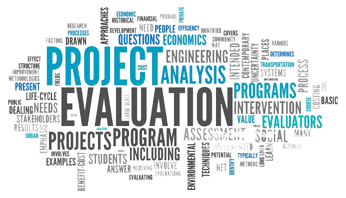

DishaNitish Technologies
DishaNitish Technologies
Construction equipment like vehicles and machines is expensive and is often difficult to replace. In addition to regular maintenance, there are many ways to maximize your equipment use. One way to take full advantage would be by partnering with an integrated construction software that gives you more insight into each unit. When selecting construction software, go with a vendor that provides equipment management. With this feature, business owners, general contractors and project managers will be able to efficiently track all important equipment details and make smarter decisions. With intelligent forecasting, projects will be completed on time and on budget. In addition, scheduling software always allows for each jobsite to be well equipped. With these tools, your team can increase efficiency and productivity.
Project Evaluation Monitor Movement of Materials Roof Inspection Reduced Energy Costs Building Surveillance Contractor Surveillance.
Unmanned aerial vehicles, or drones, are gaining in popularity. These vehicles can be controlled remotely or fly a preset path to perform site surveys and assess project progress. Advanced models can take aerial video, maps, pictures and 3D images. UAVs are also helpful in monitoring logistics, performing site inspections and assessing as-built conditions.
Although many construction professionals may by concerned about the costs and practical application of this new technology, the potential benefits and high long-term ROI should outweigh these concerns.
Robotic building arms and 3D printers are being used to produce building components or even entire buildings. This combination of technology uses concrete, extruded concrete, and plastics to "print" components and buildings of all kinds and is quickly being adopted on a wider scale.
Robots also serve other uses within the construction sector – placing bricks, excavating, demolishing, and accessing areas that are difficult or unsafe for humans.
"DishaNitish Technologies Pvt. Ltd."
is product and service-based software company.
CIN:U72900HP2019PTC007582
Startup no DIPP:DIPP43337 (DPII-GOI)
GET IN TOUCH